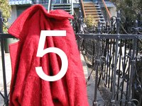

|
|
||
|  | ||
Start het spel door op het plaatje te klikken van de kern waarmee je wilt oefenen. Als je bijv. kiest voor kern 3, dan krijg je tijdens het spel alleen woorden die je aan het eind van kern 3 kunt lezen.
Het spel begint makkelijk: de woorden waartussen je moet kiezen, lijken helemaal niet op elkaar. Je kunt tijdens het spel voor een hoger level kiezen. Hoe hoger het level, hoe meer de woorden op elkaar gaan lijken. Je moet dus steeds nauwkeuriger lezen.
Via de geavanceerde opties kun je precies bepalen op wat voor manier je het spel wilt spelen en met welke woordenlijst, maar je kunt dan niet tijdens het spel van level veranderen.
Copyright © 2007 Liesbeth Flobbe. Alle rechten voorbehouden. In een later stadium van de ontwikkeling van dit spel zal ik nadenken over een licentie voor dit spel. Maar het spel spelen vanaf deze website mag natuurlijk al! De afbeeldingen in het spel zijn eigendom van diverse personen; via een link bij iedere afbeelding kom je erachter wie de afbeelding gemaakt heeft.
meer informatie over dit spel
andere educatieve materialen op deze site